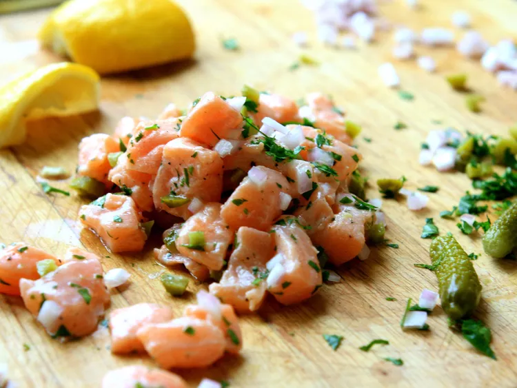

Home
Salmon Tartare

Description
This salmon tartare is a beautifully simple preparation of raw salmon that is a celebration of freshness! The thing I love about this dish is the magic worked by the lemon juice that causes a cooked texture on the surface of the fish whilst leaving the center rare and soft. Serve with buttered crusty brown toast.
Ingredients
- 1 (5 ounce) very fresh salmon fillet
- 1 teaspoon minced shallot
- 1 teaspoon minced fresh flat-leaf parsley
- 1 teaspoon minced fresh chives
- 1 teaspoon minced cornichon (small pickled cucumber)
- 1 teaspoon fresh lemon juice, or more to taste
- sea salt and freshly ground black pepper to taste
Steps
- Remove salmon skin and cut out the grey-colored bloodline so you have only the shiny pink flesh. Cut salmon into small cubes and place in a bowl.
- Stir in shallot, parsley, chives, pickle, lemon juice, sea salt, and pepper. Let marinate for 5 minutes before serving.